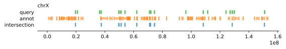
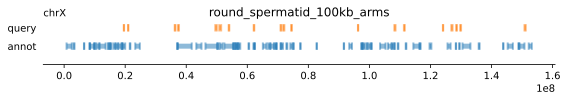
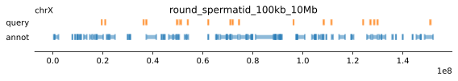
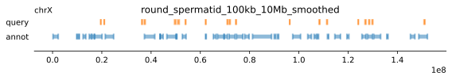

import pandas as pd
import os
# Directory containing your .csv files
csv_dir = '../results/compartments/'
# Create a dictionary to store the DataFrames
dataframes = {}
# Iterate over all .csv files in the directory
for filename in os.listdir(csv_dir):
if filename.endswith('.csv'): # Check for .csv files
# Construct the full file path
filepath = os.path.join(csv_dir, filename)
# Load the CSV into a DataFrame
# Use the filename (without extension) as the dictionary key
key = filename.replace('_a_comp_coords_', '_')
key = os.path.splitext(key)[0]
dataframes[key] = pd.read_csv(filepath)
# The `dataframes` dictionary now contains the DataFrames
dataframes.keys()
ech90 = pd.read_csv('../data/ech90_human_Mmul_10.csv')E1 vs. ECH
Overlaying the A-Compartments with Extended Common Haplotypes
The genomic regions in question
In 03_compartments.ipynb we extracted the genomic intervals of A compartments on all cell types in all combinations of the following parameters:
- Cell type: fibroblast, spermatocyte, pachytene spermatocyte, round spermatid, sperm
- Chromosome: X
- E1 restriction: full-chromosome, chromosome arms, 10Mb windows
- Resolution: 100 kb, 500 kb
The following parameter was only changed for 100kb resolution: * Smoothing: No smoothing, 5 bins (500kb)
Resulting in 45 .csv files. They are saved to ../results/compartments/.
Load the data
Time to unleash genominterv on the .csv files
Modules
import genominterv
import pandas as pdDefine a plotting function
import pandas as pd
import matplotlib.pyplot as plt
import numpy as np
%config InlineBackend.figure_format = 'svg'
def plot_intervals(query=None, annot=None, **kwargs):
tups = []
if query is not None:
tups.append(('query', query))
if annot is not None:
tups.append(('annot', annot))
tups.extend(kwargs.items())
tups = reversed(tups)
df_list = []
labels = []
for label, df in tups:
labels.append(label)
df['label'] = label
df_list.append(df)
bigdf = pd.concat(df_list)
bigdf['chrom'] = pd.Categorical(bigdf['chrom'], bigdf['chrom'].unique())
bigdf['label'] = pd.Categorical(bigdf['label'], bigdf['label'].unique())
gr = bigdf.groupby('chrom', observed=False)
fig, axes = plt.subplots(gr.ngroups, 1, figsize=(8, 1.5*gr.ngroups),
sharey=True
# sharex=True
)
if type(axes) is not np.ndarray:
# in case there is only one axis so it not returned as a list
axes = np.array([axes])
# with plt.style.context(('default')):
for i, chrom in enumerate(gr.groups):
_df = gr.get_group(chrom)
_gr = _df.groupby('label', observed=False)
for y, label in enumerate(_gr.groups):
try:
df = _gr.get_group(label)
except KeyError:
continue
y = np.repeat(y, df.index.size)
axes[i].hlines(y, df.start.tolist(), df.end.tolist(), alpha=0.5, lw=5, colors=f'C{y[0]}')
delta = len(labels)/10
axes[i].vlines(df.start.tolist(), y-delta, y+delta, alpha=0.5, lw=2, colors=f'C{y[0]}')
axes[i].vlines(df.end.tolist(), y-delta, y+delta, alpha=0.5, lw=2, colors=f'C{y[0]}')
axes[i].spines['top'].set_visible(False)
axes[i].spines['left'].set_visible(False)
axes[i].spines['right'].set_visible(False)
axes[i].set_yticks(list(range(len(labels))), labels)
axes[i].tick_params(axis='y', which='both', left=False)
axes[i].set_ylim(-1, len(labels)-0.7)
# axes[i].set_xlim(df.start.min()-delta, df.end.max()+delta)
if i != gr.ngroups-1:
axes[i].tick_params(axis='x', which='both', bottom=False)
axes[i].set_title(chrom, loc='left', fontsize=10)
plt.tight_layout()Test with a subsample of the data
from genominterv import proximity_test, interval_collapse, interval_diff, jaccard
annot = dataframes['fibroblast_500kb_arms']
query = ech90
#plot_intervals(query=query, annot=annot)
for key,annot in dataframes.items():
# Filter out subset
if ('round_spermatid_100') in key and not 'full' in key:
# Plot the intervals
plot_intervals(query=query, annot=annot)
plt.title(key)
# Do a proximity test
print(f"Tests for {key}")
annot_collapsed = interval_collapse(annot)
non_ovl_query = interval_diff(query, annot_collapsed)
print("Proximity:", proximity_test(non_ovl_query, annot_collapsed))
print("Jaccard:", jaccard(query, annot))
print()
Tests for round_spermatid_100kb_arms_smoothed
Proximity: TestResult(statistic=0.30453333333333343, pvalue=0.0218)
Jaccard: 0.035452077710120426
Tests for round_spermatid_100kb_arms
Proximity: TestResult(statistic=0.4966666666666664, pvalue=0.0004)
Jaccard: 0.03919324886292875
Tests for round_spermatid_100kb_10Mb
Proximity: TestResult(statistic=0.40763636363636385, pvalue=0.0081)
Jaccard: 0.04849757649383784
Tests for round_spermatid_100kb_10Mb_smoothed
Proximity: TestResult(statistic=0.4469090909090912, pvalue=0.0051)
Jaccard: 0.0451828466064548




Bootstrap to get a p-value
from genominterv import bootstrap
annot = dataframes['round_spermatid_100kb_arms']
chromsizes = pd.read_csv('../data/links/ucsc_ref/misc/rheMac10.filtered.chrom.sizes', sep='\t', index_col='chrom', header=None, names=['chrom','size']).to_dict()['size']
#display(chromsizes)
@bootstrap(chromsizes, samples=1000)
def jaccard_bootstrap(query, annot):
return jaccard(query, annot)
jacccard_stat, p_value = jaccard_bootstrap(query, annot){'chr1': 223616942,
'chr2': 196197964,
'chr3': 185288947,
'chr4': 169963040,
'chr5': 187317192,
'chr6': 179085566,
'chr7': 169868564,
'chr8': 145679320,
'chr9': 134124166,
'chr10': 99517758,
'chr11': 133066086,
'chr12': 130043856,
'chr13': 108737130,
'chr14': 128056306,
'chr15': 113283604,
'chr16': 79627064,
'chr17': 95433459,
'chr18': 74474043,
'chr19': 58315233,
'chr20': 77137495,
'chrX': 153388924,
'chrY': 11753682}jacccard_stat, p_value(0.03919324886292875, 0.285)